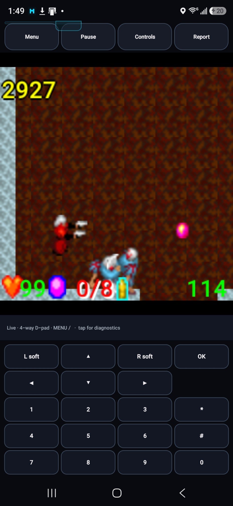

I don’t remember every turn of DeadShot’s recovery. We had gameplay early, before the sound and the layout were right. What I do remember is how much keeping that working state mattered when the conversation itself started losing track of the project.
Already playing
“dude, pretty fucking far. only complaints are no audio and some cropping. otherwise. holy fuck dude”Wakka · October 2, 2026 S05
Our first proof ran the original DEADSHOTN505, InitAll and connect classes against their preserved scratchpad data. The notes called the MLD audio silent. By the next package, we had a physical-phone gameplay baseline and could concentrate on the audio and crop issues I’d reported.S06S07
The audio pass translated the event subset used by DeadShot’s four MLD/MFi music resources into MIDI. Completion went back to the original game’s listener, leaving the game in charge of replaying its BGM. The presentation pass kept the 240×240 framebuffer and added some space around it.S07
The crop still needed work. In 0.0.3, we corrected the text baseline and DoJa font sizes behind the title/menu clipping. We also suspended the game loop and stopped audio when Android backgrounded the activity. There was a working game underneath those small display problems.S08
The controls worked. The layout did not.
By the early hours of October 3, I called it “playing pretty sweet” and asked for more comfortable controls and an appropriate icon. We were improving something I could already play.S05
The controls had more going on than a generic movement pad and an Action label suggested. DeadShot’s own setting chooses between four-way direction keys and numeric-keypad movement with diagonals. The 0.0.5 notes preserve those families and expose the actual star, hash and OK inputs. Later UI changes had to carry that behavior with them.S09
“0.05 was the last good baseline of when the controls worked but was still the wrong UI layout.”Wakka · opening a new DeadShot chat, October 3 S05
Version 0.0.8 had changed touch behavior as well as the view. A moving finger could be reinterpreted as another control. The 0.0.9 repair borrowed Dirge’s contact model: a button keeps the finger that pressed it, while navigation remains intentionally slideable. Multiple contacts are combined before the game receives press and release transitions. DeadShot keeps its own key numbers.S10
Then the system bars needed their space back. The 0.0.10 pass reserved Android’s real inset area. The later shell split the game display from the controller so their coordinates no longer competed on one full-screen canvas. The complete keypad returned too, including the easily omitted 0 and 5.S11S01
What the next chat could actually hold onto
I remember the later recovery getting caught in a ChatGPT context problem, and Passport helping me keep building. The October 5 stress-test record describes the practical issue: established constraints kept getting lost or violated, even though the working builds, source packages and reports still existed outside the chat.S13
The dates matter here. We were already preserving working states during the difficult October 2–3 session; the more formal Passport/Omni packaging came afterward. I could give a new chat an actual last-good build and its history instead of asking it to reconstruct the controls from a summary.S05S13
The later handoff shows what that meant in practice. It names my preferred 0.1.0 build, marks the new custom-control pass as pending, states what must stay intact and points to the saved phone feedback. We had a working state and a specific next task to carry into the next session.S12
We could still get things wrong in a new conversation. The saved record gave us somewhere concrete to return to when that happened.
“This is the preferred version”
“button inputs even make more sense.”Wakka · recorded October 4 feedback S02
I chose DeadShot Omni 0.1.0 as the version to keep while we continued tailoring the custom UI. The preserved phone image has gameplay above the original keypad. We could work on the deck without treating the game underneath it as disposable.S02

The original keypad stayed available beside the custom-control work. This is the earlier October 4 phone image, retained unchanged in the later checkpoints.
Open the image for the full original view.
S19That custom deck had been designed for the wrong vertical slot. The 0.1.1 candidate rebuilt its layout around the real 244dp space, removed duplication and enlarged the useful targets. The game’s runtime stayed at 0.0.12 while the shell followed its own version line.S03S04
A button that confirms, but does not fire
Later, we removed the entrance page so DeadShot opened directly into gameplay. On October 20, I accepted 0.1.3: “Perfect. It works great now, thank you.” Then I sent the custom mappings back for another correction.S14S15
The large ACTION button had always sent OK. That worked for menu confirmation, but default KEY TYPE 1 uses star or hash for manual attack. Other key types use OK; the automatic-attack modes use that same primary hold to lock facing. One label had covered several original meanings.S16
In the 0.1.4 candidate, we made the primary action follow the selected key type and kept Confirm separate. The regression check calls the original input handler and catches our old mistake: Confirm doesn’t fire in type 1. We kept the 0.1.3 baseline I’d accepted alongside the new correction and the phone checks it still needed.S17S18
A lot of DeadShot’s work happened after it was already playing. We kept changing the sound, the presentation and the controls around it. Keeping the reports and working builds meant a lost conversation didn’t have to take the game with it.
About these records
The early gameplay reactions and last-good statement are retrieved owner-message excerpts. The passport stress-test packet is retrospective; it distinguishes the practices already in use from the later formal packaging. The chapter documents constraint failures and recoverable artifacts without claiming an officially established platform root cause. Omni 0.1.0 and later Bridge 0.1.3 have their own recorded owner feedback; these are distinct from runtime 0.0.12 and the new 0.1.4 controls. The latest handler/framework checks are not a full phone gameplay or comfort test. The reproduced image belongs to October 4, not the later candidate. No game or app was rebuilt for this archive.
The receipts
Selected report lines, investigation notes and recorded feedback behind the story. Each receipt keeps its source and context.
S01 / A complete keypad returns in 0.0.12Build verification
Source: DeadShot v0.0.12 / VALIDATION_v0.0.12.txt · selected lines 13–20, 37–39
Requested UI/input delta ------------------------ - Toolbar third button is now Keypad while the ergonomic pad is visible. - Pressing Keypad swaps the lower controller view to a complete original phone keypad. - While the phone keypad is visible, the toolbar button reads D-pad and returns to the ergonomic controller. - Full keypad exposes L soft, Up, R soft / Left, OK, Right / Down / 1-9 / *, 0, #. - Keypad uses the same captured-contact behavior so a finger remains tied to the key where it started. [... selected excerpt ...] Note ---- This validation covers source/build/signature/payload integrity in the build environment. Physical-device behavior still requires the normal S25 Ultra test run.
S02 / The owner accepts a specific baselineRecorded owner feedback
Source: DeadShot Omni v0.1.0 / PHONE_FEEDBACK_20261004.txt · selected lines 5, 7–19, 21–24
oh fuck yes! this is the preferred version. i still need to fix the custom UI layer for this one obviously. but even normalizing things is just helping in general. button inputs even make more sense. so whats our next step then? [... selected excerpt ...] SCOPED ACCEPTANCE The owner selects the exact DeadShot Omni 0.1.0 APK as preferred going forward, and reports clearer button inputs. Custom control UI tailoring remains open. Use this complete source/update identity for normal subsequent chat iterations. The original 0.0.12 runtime remains its preservation input/reference. SCREENSHOTS INSPECTED Screenshot_20261004_014929.jpg: title screen with custom deck, shared toolbar, complete game stage and status. Native STAR/POUND, OK/Action and soft keys remain. Screenshot_20261004_014959.jpg: gameplay with shared full native keypad; toolbar reads Controls for returning to the custom deck. Both show four-way native mode; these images do not validate eight-way or hardware input combinations. Phone gameplay/input preference is owner-reported. [... selected excerpt ...] Audio output, lifecycle stress and report chooser/export success were not separately reported in this feedback. Do not treat them as confirmed by images. The build-time description baked into the unchanged APK says phone validation is pending; this receipt supersedes it for the scoped owner acceptance above.
S03 / A control-only candidate, with a rollback baselineControl verification notes
Source: DeadShot Omni v0.1.1 / CUSTOM_CONTROLS_0.1.1.txt · selected lines 3–17
Scope authorized by owner: custom controls page only. INTENDED EXECUTABLE DELTA - DeadShot profile GameView custom deck targets the actual 244dp shell slot. - Duplicate custom OK/Confirm surface removed; ACTION remains KEY_SELECT (20). - Redundant CONTROL/mode card removed. - Soft1/Soft2 and */# top-row targets: 58dp high; */# 58dp wide. - Movement surface: 148dp maximum, preserving existing direction math and four/eight-way behavior. - ACTION: 110dp, inset 12dp from right edge, label hint "OK / SELECT". UNCHANGED BY INTENT Shared toolbar/status/full keypad, runtime, renderer, game payloads/resources, audio, pause/resume, reports, native key numbers, mode translation, contact capture and hardware mapping. STATUS Host build/signature/checks PASS. Physical phone comfort/geometry not yet validated. Owner-approved rollback baseline remains 0.1.0.
S04 / Two version lines describe two layersCheckpoint summary
Source: DeadShot Omni v0.1.1 / README_FIRST.txt · selected lines 8–14, 41–50
PLAY DEADSHOT starts the preserved 0.0.12 runtime. The shared launcher, Tools, Menu/Pause/Keypad/Report toolbar, game/status slots and full native keypad remain the same shared source accepted in the Snowboarding pilot. The custom control deck is DeadShot-specific. Controls retain DeadShot's original native map and four-way/eight-way game-selected movement modes. The native-keypad fallback uses the shared keypad with DeadShot's key numbers. The original four MIDI resources remain; no audio decoder was replaced. [... selected excerpt ...] host build-tools. Set ANDROID_JAR to API 35 android.jar and ANDROID_BUILD_TOOLS to the host build-tools/35.0.0 directory. Run python3 tools/build.py, then python3 tools/check.py. Requires Python 3 and Java 17+. No Gradle or network resolution is required. Linux was tested; Windows build support is untested. The script generates com.wakka.deadshot.R for the original MIDI resource calls, while the installed package remains com.wakka.omnibridge.deadshot. STATE 0.1.1 is a bounded custom-control candidate built from the owner-preferred 0.1.0. Only profiles/deadshot/.../GameView.java control geometry/presentation is intentionally
S05 / Gameplay first; a new chat needs the last good baselineConversation excerpts
Source: Wakka / DeadShot development conversations / October 2–3, 2026
Retrieved owner-message excerpts, retaining wording. Times converted from recorded UTC to Iowa local time. The final excerpt belongs to a message opening a new DeadShot chat, not to a later build acceptance.
October 2, 15:31:15 CDT — “dude, pretty fucking far. only complaints are no audio and some cropping. otherwise. holy fuck dude” October 3, 02:18:49 CDT — “its honestly playing pretty sweet” October 3, 08:28:10 CDT — “0.05 was the last good baseline of when the controls worked but was still the wrong UI layout.”
S06 / The first original-bytecode proof is explicitly silentInitial checkpoint notes
Source: DeadShot_Bridge_v0.0.1_Source.zip / README.txt · selected lines 3–8, 12–15
First Android proof build for the preserved 2004 DoJa title DMC DEADSHOT. Current goals: - run the original DEADSHOTN505 / InitAll / connect bytecode unchanged - use the preserved .sp scratchpad as game data - implement only the DoJa APIs actually referenced by this title [... selected excerpt ...] Known limitations of v0.0.1: - MLD audio is stubbed/silent - online ranking/network services are stubbed - graphics/input behavior is an initial compatibility pass and needs device validation
S07 / Four music resources and the first crop repairCheckpoint audio/presentation notes
Source: DeadShot_Bridge_v0.0.2_Source.zip / README.txt · selected lines 4–15, 17–24
Physical-device baseline: v0.0.1 reached real gameplay on a Samsung Galaxy S25 Ultra.
v0.0.2 changes only the two host-side issues observed in that run:
1. Audio pass
- DeadShot's four MLD/MFi music resources are read from the preserved game data.
- The build-time converter in tools/mld_to_midi.py converts the exact event subset used
by DeadShot into Standard MIDI Type 0 resources.
- Android MediaPlayer plays those resources.
- Media completion is reported back to the original DoJa MediaListener with event 3,
leaving DeadShot's own BGM replay/loop behavior in charge.
- This is a compatibility translation, not a claim of bit-identical NEC handset FM sound.
[... selected excerpt ...]
2. Safe-fit presentation
- The DoJa framebuffer remains exactly 240x240.
- Android presentation now leaves a small modern-phone edge margin rather than stretching
the virtual handset display fully to the physical screen width.
- No game drawing APIs or original DeadShot bytecode were changed for this fix.
Original game bytecode, scratchpad data, input mapping, save path, and dead-service workaround
remain on the known-working v0.0.1 path.S08 / Margins did not settle the title/menu cropCheckpoint renderer/lifecycle notes
Source: DeadShot_Bridge_v0.0.3_Source.zip / README.txt · selected lines 5–12
v0.0.3 changes from v0.0.2: - Correct DoJa drawString baseline semantics. This fixes the title/menu text crop seen on physical S25 testing. - Correct DoJa 3.0+ font sizing used by DeadShot: 12-dot default/tiny and 24-dot medium. - Suspend the original game loop when the Android activity is backgrounded. - Stop audio immediately when backgrounded; DeadShot's existing resume logic restarts the appropriate BGM on return. - Preserve the known-good 240x240 renderer, controls, scratchpad, gameplay path and v0.0.2 MIDI resources. The original DeadShot JAR and game logic are not modified by these fixes.
S09 / The original game chooses four-way or numeric movementCheckpoint control investigation
Source: 06-DeadShot_Omni_Bridge_v0.1.1_Preservation.zip / baseline/original-CONTROL_NOTES.txt · selected lines 21–32
DeadShot's own key_con option controls movement family: modes 0 / 2 = four-way DoJa D-pad movement modes 1 / 3 = numeric-keypad movement, including diagonals v0.0.5 touch behavior: - The movement disc reads DeadShot's current key_con value and automatically emits the correct original movement family. - Numeric modes expose eight 45-degree movement sectors; D-pad modes remain four-way. - The action area exposes the actual *, # and OK/Select keys. No A/B/C aliases. - Soft1 and Soft2 are exposed as MENU and BACK-style pill buttons; if DeadShot supplies a short soft-label string, the host displays that original label instead. - Multi-touch and oversized invisible hit targets remain enabled.
S10 / Restore contact behavior while keeping DeadShot’s own keysCheckpoint input-restoration notes
Source: DeadShot_Bridge_v0.0.9_InputRestore_Source.zip / README.txt · selected lines 4–26
Purpose ------- v0.0.9 keeps the v0.0.8 Dirge-style visual layout, but replaces the v0.0.8 free-sliding touch router with the known-good contact behavior taken from the supplied Dirge Bridge v0.2.4 APK while preserving DeadShot's verified v0.0.5 native key map. What changed ------------ - DeadShot key codes are unchanged from v0.0.5: keypad 1/2/3/4/6/7/8/9, *=10, #=11, D-pad 16/17/18/19, OK=20, Soft1=21, Soft2=22. - A finger captures the control it starts on. - Non-navigation buttons stay tied to that original control instead of turning into a neighboring button when the finger drifts. - Navigation remains intentionally slideable so held movement can change direction. - A small 4dp release/re-entry slop mirrors the supplied Dirge contact behavior. - Multi-touch is aggregated before DeadShot receives key transitions, preventing duplicate presses/releases when two contacts resolve to the same native key. - ACTION_DOWN requests that parent views do not intercept the control gesture. - Releases are dispatched before replacement presses. - No A/B/C aliases were introduced. - Original DeadShot game JAR is unchanged.
S11 / Reserve system bars, then separate the game stageCheckpoint control investigation
Source: 06-DeadShot_Omni_Bridge_v0.1.1_Preservation.zip / baseline/original-CONTROL_NOTES.txt · selected lines 44–49, 51–58
v0.0.10 window cleanup ---------------------- - Input code is unchanged from v0.0.9. - GameView.java is byte-for-byte identical to the v0.0.9 input-restored source. - Only Android window/container behavior changed: the game view now lives inside a Dirge-style inset root that reserves the real system-bar/cutout area. [... selected excerpt ...] v0.0.12 shell/layout correction ------------------------------- - The input semantics above are unchanged. - Game rendering was split into GameDisplayView; GameView is now the controller view only, mirroring Dirge Bridge's separate game-stage + GamePad structure. - The router from hitAreaAt() onward is unchanged from v0.0.9. - Visual control coordinates are recalculated inside the controller's own wrap-content region instead of a full-screen canvas.
S12 / A handoff carries the last good build and the next taskStructured artifact handoff
Source: 06-DeadShot_Omni_Bridge_v0.1.1_Preservation.zip / artifact-handoff.json · selected lines 16–22, 24–34, 52–60
"working_state": {
"current_status": "DeadShot Omni 0.1.1 custom-control candidate prepared from owner-preferred 0.1.0; phone validation pending.",
"current_known_good": "Owner-preferred DeadShot Omni 0.1.0 APK (preserved runtime 0.0.12), using unchanged accepted shared shell.",
"last_material_change": "DeadShot-specific GameView custom control geometry/presentation only: direct 244dp layout, no duplicate OK/mode card, 58dp soft/*/# targets, 148dp movement surface, 110dp inset Action.",
"current_objective": "Phone-test only the revised custom controls without changing runtime, keypad, toolbar, renderer, audio, pause, reports or native mappings.",
"recommended_next_move": "Install v0.1.1 over 0.1.0 and evaluate thumb comfort, accidental presses, four-way movement and Action/*/# reach. Promote only after owner approval.",
"failed_attempts": []
[... selected excerpt ...]
"context_snapshot": {
"do_not_break": [
"Original DeadShot app/source/saves.",
"Accepted Omni Snowboarding app/source/update identity.",
"DeadShot native controls, renderer, game data and MIDI resources.",
"Diagnostics and reports; ordinary authorized chat iteration."
],
"decision_history": [
"Dirge is the preferred common UI standard.",
"Omni Snowboarding 0.1.0 visuals/gameplay accepted by owner.",
"DeadShot 0.0.12 supplied and explicitly selected for the next migration.",
[... selected excerpt ...]
"context_routes": {
"always_read": [
"AGENTS.md",
"artifact-passport.json",
"artifact-handoff.json",
"approved-baselines.json",
"docs/ARCHITECTURE.md",
"verification/PHONE_FEEDBACK_20261004.txt"
],S13 / The preservation practices came before formal Passport packagingRetrospective investigation
Source: DeadShot_Passport_Stress_Test_Query.txt / prepared October 5, 2026 · selected lines 13–23, 184–204
A retrospective hypothesis/evidence packet, not a raw phone log or an official platform incident finding. Selected local-project analysis only; its external web claims and links are not reproduced or adopted.
The narrower and more defensible hypothesis is: "When the AI working on DeadShot began repeatedly losing or violating established project constraints, the project remained recoverable because important state had already been externalized into known-good APKs, source/preservation ZIPs, signing artifacts, validation reports, and explicit rollback baselines. This functioned like a live fault-injection test against reliance on conversational memory alone." IMPORTANT DISTINCTION Do not claim that a fully formal Passport artifact had already been deployed throughout the October 2-3 DeadShot session. The evidence supports this more precise wording: - DeadShot already used preservation-oriented packaging and artifact handoffs during the session. - Formal Passport/Omni/public-release packaging was normalized afterward, especially on October 4. - Therefore the DeadShot episode stress-tested the UNDERLYING PRESERVATION ARCHITECTURE / PRACTICES that Passport later formalized, rather than serving as a clean certification test of a finished Passport implementation. [... selected excerpt ...] The project remained recoverable because state existed outside the model's active conversational reasoning: - known-good APKs; - source ZIPs; - preservation ZIPs; - explicit version lineage; - signing keys / signer identity where preserved; - reports and validation records; - immutable or byte-identical original game payloads; - known-good sibling bridge architecture; - explicit rollback statements such as "v0.0.5 is the last good baseline"; - later canonical packaging/public-release audits. This allowed a human + AI + artifact recovery loop: AI loses or misapplies context -> user notices contradiction -> artifact / known-good baseline provides objective state -> assistant is re-anchored -> regression is bounded or rolled back -> project continues instead of being reconstructed from scratch
S14 / DeadShot opens straight into the gameCheckpoint direct-entry notes
Source: DeadShot_Bridge_v0.1.4_PRIVATE_CHECKPOINT.zip / docs/DIRECT_ENTRY_0.1.3.md · selected lines 3–20
Owner authorization: remove DeadShot's launch page for Omni integration, make the original bridge follow the current gameplay-only pattern, preserve custom controls, and proceed with the implementation after discussion. ## Implementation GameActivity itself is the exported MAIN/LAUNCHER entry. It uses singleTop, matching the repeated-entry policy in the inspected Dirge 0.3.0 manifest. There is exactly one launcher filter and one real Activity. The former LauncherActivity Java class and obsolete app ToolsActivity are removed. An exported activity-alias named com.wakka.omnideadshot.LauncherActivity points to GameActivity. Existing explicit component references can continue to enter gameplay without executing a redirect Activity. The alias has no launcher filter, so it does not add a second app icon. New callers can use GameActivity or the package launch intent. There is no Android parent Activity or home page to return to; system Back retains the existing input/audio/worker cleanup and finishes gameplay, revealing its caller. Original Soft2 remains a game key.
S15 / The owner accepts 0.1.3, then redirects the control workRecorded owner feedback
Source: DeadShot_Bridge_v0.1.4_PRIVATE_CHECKPOINT.zip / verification/OWNER_FEEDBACK_20261020.txt · selected lines 1–3
Owner feedback on delivered v0.1.3: "Perfect. It works great now, thank you." Owner then reports custom buttons incorrectly mapped and not aligned with the current standard, and approves the discussed correction. Scope: v0.1.3 installs/runs. Correct custom primary mapping/panel now. Do not infer that the new v0.1.4 controls have been tested on the phone.
S16 / Confirming a menu and firing are different native inputsCheckpoint control investigation
Source: DeadShot_Bridge_v0.1.4_PRIVATE_CHECKPOINT.zip / docs/CONTROLS_0.1.4.md · selected lines 14–27
processEvent(int,int) implements the following, using zero-based key_con: | Displayed KEY TYPE | Movement | Attack mode | Primary hold/release key | | --- | --- | --- | --- | | 1 (mode 0) | Direction keys | Manual attack | * (10) or # (11) | | 2 (mode 1) | Numeric eight-way | Manual attack | OK (20) | | 3 (mode 2) | Direction keys | Automatic attack | * (10) or # (11), locks facing | | 4 (mode 3) | Numeric eight-way | Automatic attack | OK (20), locks facing | For types 1/3 the prominent custom button uses *; the separate original # is retained. These equivalent native bindings are not emitted simultaneously. For manual types processEvent sets/resets mfire and related charge flags; for automatic types it sets/resets kotei. The former large ACTION button always sent 20, which was menu Confirm but not manual attack in type 1.
S17 / The original handler catches the earlier Action mistakeCheckpoint host verification
Source: DeadShot_Bridge_v0.1.4_PRIVATE_CHECKPOINT.zip / verification/VERIFICATION_v0.1.4.txt · selected lines 22–29
PASS — original JAR input-handler regression, through actual backend routing:
Type 1/2 custom primary sets and releases original mfire manual-attack
flag. Type 3/4 sets and releases original kotei facing-lock flag. Native
direction/diagonal flags and releases match selected original family.
The regression also proves that old Confirm (20) does not fire in type 1.
PASS — custom panel rendered/reviewed in manual and automatic modes. Internal
previews are framework renders, not phone gameplay captures.
PASS — passport/handoff schema checks; candidate remains draft for new controls.S18 / The latest handoff keeps both corrections and open questionsStructured artifact handoff
Source: DeadShot_Bridge_v0.1.4_PRIVATE_CHECKPOINT.zip / artifact-handoff.json · selected lines 17–29, 31–59
"working_state": {
"current_status": "0.1.4 custom control correction built; original-JAR input handler, 8 Android integration tests, 20 JVM assertions and preservation/package/signature checks pass. New controls await phone feedback.",
"current_known_good": "0.1.3 owner confirms installs/runs well; its custom primary/action layout requires the authorized correction.",
"last_material_change": "Mode-aware primary attack/facing lock, independent Confirm, captured button key, neutral pad center, current dark/cyan custom panel with declared sizing.",
"current_objective": "Owner tests the new custom primary/Confirm/layout in all four original KEY TYPE settings.",
"recommended_next_move": "Test all four original KEY TYPE choices with the new custom controls, including hold/release, keypad switching and controller A/Confirm.",
"failed_attempts": [
{
"summary": "Owner-supplied video of the 0.1.2 UPDATE attempt.",
"outcome": "Package Installer reports App not installed before startup; exact package-manager error/installed identity unavailable.",
"avoid_repeating": true
}
]
[... selected excerpt ...]
"context_snapshot": {
"do_not_break": [
"Original DeadShot app/source/saves.",
"Accepted Omni Snowboarding app/source/update identity.",
"DeadShot native controls, renderer, game data and MIDI resources.",
"Diagnostics and reports; ordinary authorized chat iteration."
],
"decision_history": [
"Dirge is the preferred common UI standard.",
"Omni Snowboarding 0.1.0 visuals/gameplay accepted by owner.",
"DeadShot 0.0.12 supplied and explicitly selected for the next migration.",
"Use a separate DeadShot package; do not replace Snowboarding with another title.",
"Owner asked to keep normal chat-based iterations and distinctly versioned filenames.",
"2026-10-04: owner selects DeadShot Omni 0.1.0 as preferred and reports clearer button inputs; retain custom UI polish as a title task.",
"2026-10-20: owner requests gameplay-only entry for Omni and authorizes proceeding after Dirge comparison; custom controls stay unchanged.",
"2026-10-20: owner confirms 0.1.3 works, then explicitly agrees to correcting its custom primary mapping and current dark/cyan control hierarchy. This overrides the earlier custom-source freeze."
],
"known_uncertainties": [
"New 0.1.4 controls require phone comfort, native in-game KEY TYPE switching, hold/release and real controller feedback.",
"Original game.resume policy may restart BGM.",
"Framework and isolated native input-handler checks do not establish full original-game execution, audio or real device Downloads."
],
"recent_delta_from": "Owner-confirmed working DeadShot Bridge 0.1.3",
"recent_delta": [
"Primary */# for original types 1/3 and OK for 2/4; manual attack versus facing lock follows key_con.",
"Independent Confirm and raw softkeys/*/# remain accessible.",
"Kit palette and recognizable square pad; neutral center; captured button keys; declared content/font-scale bounds.",
"Controller A follows primary; Enter/center remains Confirm; original keypad unchanged.",
"Original runtime/assets/renderer/audio/saves/report/direct-entry/update identity preserved."S19 / DeadShot gameplay beside the complete original keypadPreserved phone screenshot
Source: DeadShot Omni 0.1.0 / Screenshot_20261004_014959.jpg
Inspected as pixels. This is the earlier owner-preferred 0.1.0 phone image, not evidence of the new 0.1.4 controls. No private notification text, account details or private paths are visible.
October 4 phone screenshot: original DeadShot gameplay, HUD and full handset keypad. Preserved unchanged in the inspected Omni 0.1.1 and later 0.1.4 checkpoints. Image SHA-256: e862909eea6358ee0ce0677c43d1b2cef158d224f5b96a2e954fab9face41580
S20 / Rush Marine’s phone report becomes a shared referenceCheckpoint reporting requirements
Source: 06-DeadShot_Omni_Bridge_v0.1.1_Preservation.zip / docs/REPORT_REQUIREMENTS.md · selected lines 3–5
These inherited report requirements name Rush Marine 0.0.9 as the reference and describe the Snowboarding pilot. They document a shared reporting convention, not BREW interpreter counters inside DeadShot.
Every backend must provide a snapshot without boot/reset, preserve a last-session report and keep its existing diagnostic features accessible through Tools. Shared presentation cannot be a reason to drop backend detail. The Rush Marine 0.0.9 device report is the reporting reference reviewed here. Its summary leads with live-session status, input press/release counts, interpreter/display counters, resource/audio outcomes and framebuffer results, followed by the retained trace. This pilot follows that structure using Snowboarding's available facts; it does not fabricate BREW counters in a DoJa game.